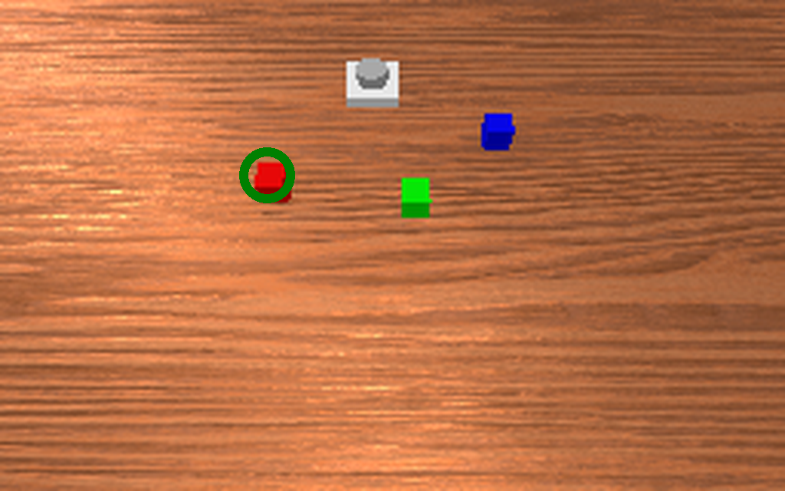
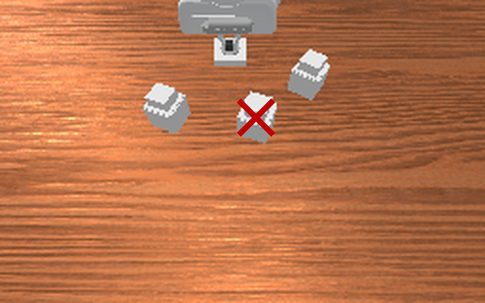

How Hard Are Current Robot Memory Benchmarks for Agentic Harnesses?
Abstract
Robot memory benchmarks usually evaluate end-to-end policies, whose failures can come from memory, planning, or control. We use an agentic harness to test what information agents need to solve RoboMME and RMBench. We wrap GPT-6 Astra and Claude Opus 5.5 in a harness that makes each decision through a stateless API call; the model receives prior information only in the prompt, and a controller developed separately by an LLM coding agent executes the selected skill. On 160 RoboMME test episodes, GPT-6 Astra solves 81.3% with a text log of its actions and 95.6% when it also receives a contact sheet of past camera frames. Claude Opus 5.5 improves from 72.5% to 88.8%. Three tasks with disappearing visual cues account for most of the gains. RoboMME's oracle planner gives similar aggregate scores. With visual history, success remains at 91.3% and 87.5%, respectively, after removing task-specific strategy and memory advice. On RMBench, an event log containing agent-written observations reaches 91 successes out of 100, compared with 93 after adding decision-time images. Episodes average 3.7–3.9 high-level decisions on RoboMME and about nine on RMBench. In the memory-equipped conditions, each request includes the full text log and, when enabled, a contact sheet of past observations. Longer tasks could test how agents choose what to retain when the full history no longer fits in the prompt.
Two Deliberate Restrictions
We use the harness as a diagnostic instrument, not as a method to maximize success.
We bypass the model's native memory. The model keeps no chat session: every decision is a separate, stateless API call, and the harness rebuilds the request from scratch. The model therefore knows about earlier steps only what the harness puts in the prompt, and we can add or remove one memory source at a time: nothing, a structured log of past actions and their outcomes, or the log plus a visual history of the agent's own execution.
We let the model call only high-level skills. When the goal is to test memory, the agent should not be bottlenecked by the dynamics of manipulation. On RoboMME, it chooses among the benchmark's own high-level skills, which are executed by agent-built skills: code that a coding agent wrote, tested in simulation and froze before evaluation. RMBench offers no skills, so the model names a skill and a pixel, and agent-built skills ground the pixel and plan the motion. Within each comparison the planner and the executor stay fixed, so a change in success comes from the memory supplied, not from how the arm moves.
The harness is otherwise kept simple: no training and no retrieval, only short notes about benchmark conventions, a few generic strategies and, on RMBench, what information to record.
Everything the model knows about the past is what the harness puts in the prompt. We compare three settings:
- No memory (RMBench only): the task, a task note and the current image; no past actions or observations.
- Text log: one entry per past decision. On RoboMME, a structured action log with the skill, its target pixel, the
result and the number of motion frames, e.g.
#4 a [58,154] ongoing 86. On RMBench, an event log that also stores a one-line record written by the agent itself, which can retain visual facts, e.g.7 place [130,173] succeeded“red uncovered first; next uncover green …” - Text log + visual history (images): the same log, plus a grid of past camera frames (RoboMME: 24 frames sampled over the whole episode; RMBench: one frame per decision).
| Full-context agent (e.g., Embodied-Astra) | Ours | |
|---|---|---|
| Memory | Native: one chained conversation per episode | No native memory. Each decision is a separate, stateless API call; the past enters only through what the harness puts in the prompt (no memory / text log / text log + visual history) |
| Control | Model outputs end-effector waypoints | Skills only. The model picks a skill (+ pixel); agent-built skills, written by a coding agent and frozen before evaluation, execute it |
| Question | How well can a frontier model do? | What information does an agent need to remember? |
Memory becomes a variable we can ablate while the planner and executor stay fixed. The protocols differ, so we do not claim to outperform full-context agents.

One decision on RoboMME. The harness builds a prompt from the goal, skills, action log and current image (plus, in the action log + visual history setting, a 24-frame grid of past execution); the model answers in one stateless call; agent-built skills execute it.
Finding 1: With Visual History, GPT-6 Astra Solves 95.6% of RoboMME
Average success (%). Baselines use 800 test episodes, ours 160; differences in episodes and execution protocol limit direct comparisons.
With the action log alone, GPT-6 Astra solves 81.3% of episodes and Claude Opus 5.5 72.5%; with visual history, 95.6% and 88.8%.
GPT-6 Astra then solves every episode on 15 of the 16 tasks. The remaining failures lie mostly in StopCube, which requires
pressing a button at the right moment, and, for Opus, in RouteStick. RoboMME reports 47.9% for Gemini-2.5-Pro with its
oracle planner and 44.5% for the best end-to-end memory VLA. Our result is also numerically above RoboMME's reported human score
(90.5%), but the evaluations differ in episode count and execution protocol and are not directly comparable.
Robustness. Executing the same skills with RoboMME's oracle planner gives similar aggregate results (95.0% and 88.8% with
visual history). Removing task-specific strategy and memory advice from the prompt, while keeping interface conventions and all
memory inputs, leaves success with visual history at 91.3% for GPT-6 Astra and 87.5% for Opus; the largest drop is on
VideoRepick (10/10 to 4/10).
Per-task results with RoboMME's oracle planner
| GPT-6 Astra | Opus 5.5 | GPT-6 Astra | Opus 5.5 | ||||||
|---|---|---|---|---|---|---|---|---|---|
| Task | N | H | N | H | Task | N | H | N | H |
| VideoUnmaskd | 100 | 100 | 100 | 100 | SwingXtimes | 100 | 100 | 100 | 100 |
| VideoUnmaskSwapd | 100 | 100 | 100 | 90 | ButtonUnmask | 30 | 100 | 50 | 100 |
| VideoRepickd | 100 | 100 | 80 | 80 | ButtonUnmaskSwap | 20 | 100 | 20 | 100 |
| VideoPlaceButtond | 100 | 100 | 90 | 90 | PickHighlight | 20 | 100 | 40 | 100 |
| VideoPlaceOrderd | 100 | 100 | 100 | 100 | InsertPegd | 100 | 100 | 90 | 90 |
| BinFill | 80 | 80 | 90 | 90 | RouteStickd | 100 | 80 | 60 | 50 |
| PickXtimes | 100 | 100 | 100 | 100 | PatternLockd | 100 | 100 | 100 | 90 |
| MoveCubed | 100 | 100 | 90 | 90 | StopCube | 50 | 60 | 20 | 50 |
Same models, prompts and task notes, with RoboMME's oracle planner executing the skills. N: action log; H: action log + visual history; 10 episodes per task. d: demonstration provided. Average: GPT-6 Astra 81.3 → 95.0, Opus 76.9 → 88.8.
Finding 2: On RMBench, an Agent-Written Event Log Reaches 91/100
RMBench has no skill library, so the model names a skill and a target pixel, and agent-built skills execute it, without reading object state from the simulator. We compare the three memory settings with GPT-6 Astra on 10 tasks × 10 seeds. Here the text log is an event log: alongside each action and its outcome, the agent writes a one-line record of what it wants to remember.
Successes out of 100. API cost: $0.17 (event log) vs. $0.23 (event log + images) per episode.
The event log reaches 91/100, and adding decision-time images gives 93/100, a difference that is not significant (p = 0.51). Because the event log can already retain visual facts, this measures the additional benefit of images beyond the log. Differences in log contents and frame sampling limit direct comparisons with RoboMME.
RMBench harness and per-task results

RMBench has no skill library: the model outputs a skill and a pixel, and agent-built skills ground it with SAM2 + depth and plan with CuRobo, without simulator state.
| Task | No memory | Event log | Event log + images |
|---|---|---|---|
battery_try | 0/10 | 7/10 | 7/10 |
blocks_ranking_try | 0/10 | 10/10 | 10/10 |
cover_blocks | 0/10 | 7/10 | 8/10 |
observe_and_pickup | 0/10 | 7/10 | 9/10 |
place_block_mat | 0/10 | 10/10 | 10/10 |
press_button | 0/10 | 10/10 | 10/10 |
put_back_block | 0/10 | 10/10 | 10/10 |
rearrange_blocks | 0/10 | 10/10 | 10/10 |
swap_T | 0/10 | 10/10 | 9/10 |
swap_blocks | 0/10 | 10/10 | 10/10 |
| Total | 0/100 | 91/100 | 93/100 |
Finding 3: On RoboMME, Adding Visual History Is Worth 14–16 Points

choice=b, point=[97,87]The button was pressed, and the reveal showed the red cube beneath the leftmost container.

choice=b, point=[102,135]The button has already been pressed; I will lift the center container, though the reveal frames are unavailable to verify its color.
GPT-6 Astra on ButtonUnmask, test episode 0. With visual history, the agent locates the red cube
from an earlier frame. Without it, the agent presses twice more and then chooses the center container. Commands and rationales are copied
from the logs; b means lift a container.
Same model, same code; only the memory changes. Adding visual history changes the outcome of 23 episodes for GPT-6 Astra, all of
them in its favor (p = 2.4×10−7; Opus: 32 of 38, p = 2.4×10−5). Most gains (20 of 23 for GPT-6 Astra, 24 of 32 for Opus) come from
ButtonUnmask, ButtonUnmaskSwap and PickHighlight, where the key cue is visible only briefly and is gone
when the agent must act.
Per-task results (agent-built skills)
| GPT-6 Astra | Opus 5.5 | GPT-6 Astra | Opus 5.5 | ||||||
|---|---|---|---|---|---|---|---|---|---|
| Task | N | H | N | H | Task | N | H | N | H |
| VideoUnmaskd | 100 | 100 | 100 | 100 | SwingXtimes | 100 | 100 | 100 | 100 |
| VideoUnmaskSwapd | 100 | 100 | 90 | 100 | ButtonUnmask | 40 | 100 | 40 | 100 |
| VideoRepickd | 100 | 100 | 90 | 90 | ButtonUnmaskSwap | 40 | 100 | 0 | 100 |
| VideoPlaceButtond | 100 | 100 | 80 | 90 | PickHighlight | 20 | 100 | 20 | 100 |
| VideoPlaceOrderd | 100 | 100 | 100 | 100 | InsertPegd | 100 | 100 | 90 | 90 |
| BinFill | 100 | 100 | 100 | 80 | RouteStickd | 100 | 100 | 60 | 60 |
| PickXtimes | 100 | 100 | 100 | 100 | PatternLockd | 100 | 100 | 90 | 90 |
| MoveCubed | 90 | 100 | 100 | 90 | StopCube | 10 | 30 | 0 | 30 |
N: action log; H: action log + visual history; 10 episodes per task. d: demonstration provided. Highlighted: the three tasks whose cue is visible only briefly.
What These Scores Do and Don't Show
The scores measure the planner and the memory it is given together; they do not isolate the underlying model's memory capability. Episodes are short (3.7–3.9 high-level decisions on RoboMME and about nine on RMBench), so the full text log and, when enabled, a contact sheet of past observations fit in every request. These results therefore do not test how systems select, compress and retrieve memory when the history exceeds the model's context. Questions that longer benchmarks could answer:
- What does an agent choose to retain when the full history no longer fits in the prompt?
- Which memory representation works best under such a budget: text logs, agent-written records, images, task state or world-state graphs?
- Which errors come from memory, and which from planning or execution, if memory decisions are scored separately from task success?
Limitations
- Each model–condition pair is run once on 160 of RoboMME's 800 test episodes; the McNemar test does not account for gains clustering within tasks.
- RoboMME's task notes were written after inspecting failures on test episodes, and the agent-built skills were debugged partly on test scenes. This affects the absolute success rates, not the paired memory comparison; the similar oracle-planner scores suggest that skill tuning alone does not explain them.
- RMBench's visual history holds only decision-time frames and misses cues visible only during execution; agent-written records and the task notes guiding them are not ablated separately.
- On two RMBench counting tasks, the image condition had no call cap, although neither memory-equipped condition reached the caps. RMBench seeds 0–9 were used while debugging the harness, so the scores may overestimate performance on unseen episodes.
- Compact task-state memory, world-state graphs, full conversational context and open-weight planners are left for future comparisons.
BibTeX
@article{wu2026memory,
title = {How Hard Are Current Robot Memory Benchmarks for Agentic Harnesses?},
author = {Wu, Feiyang and Ye, Weirui and Chen, Haonan and Chen, Haoyu and Zhou, Jiayu and Ji, Yandong and Liu, Yuejiang and Du, Yilun},
journal = {arXiv preprint},
year = {2026}
}